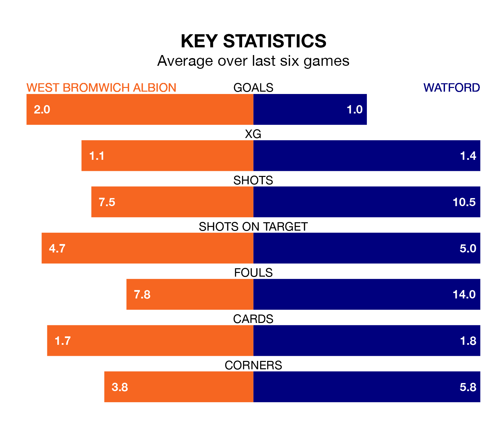

West Bromwich Albion face Watford on Monday seeking to protect their long unbeaten run in EFL Championship.
The Baggies are unbeaten in seven, with four wins and three draws, ahead of the 3pm kick-off.
They face a Watford team who have won two and drawn two over the same number of games.
In Alex Palmer, West Bromwich can rely on one of the league's safest pair of hands. He has kept 16 clean sheets in his 39 appearances this season, and only one other 'keeper – Leeds United's Illan Meslier – has been able to prevent the opposition scoring on more occasions in EFL Championship.
In Watford's net, Daniel Bachmann has seven clean sheets in 20 games. He has conceded a goal every 75 minutes, 40% more often than the 103 minutes between goals for Palmer.
With 60 goals in 39 games so far this season, Albion are scoring more than average in the league with 1.5 goals per game. And they are conceding fewer than average, letting in 37 goals at a rate of 0.9 per game.
The Hornets, meanwhile, are average scorers, with 1.4 goals per game. They have also conceded 1.4 goals per game.
In the last 10 years, West Bromwich and Watford have played each other on nine occasions. West Bromwich won one of them, Watford four, and they drew four times.
On average, the Baggies scored 1.1 goals and the Hornets 1.4 in those matches.
Their last meeting was on September 20, when they played out a 2-2 draw.
The Baggies are fifth in the table after 39 games, of which they have won 19 and drawn 10, earning 67 points.
The away team are nine places behind the hosts in 14th, with 12 wins and 13 draws putting them on 49 points.
West Bromwich's last match was on Friday, a 1-1 draw against Millwall, with John Swift getting the goal for the Baggies.
Watford drew 2-2 with Leeds United last time out, also on Friday, with Emmanuel Dennis and Vakoun Issouf Bayo on the scoresheet.
Monday's match will be refereed by Gavin Ward, who has taken charge of 20 EFL Championship games so far this season, issuing two red cards and booking 78 players. He has awarded two penalties.
The last West Bromwich game Ward refereed was a 2-0 home win against Ipswich Town on November 25. His last Watford match was their 1-0 loss away at Millwall on March 2.
Updated: 10:31 (UTC), 31/03/24